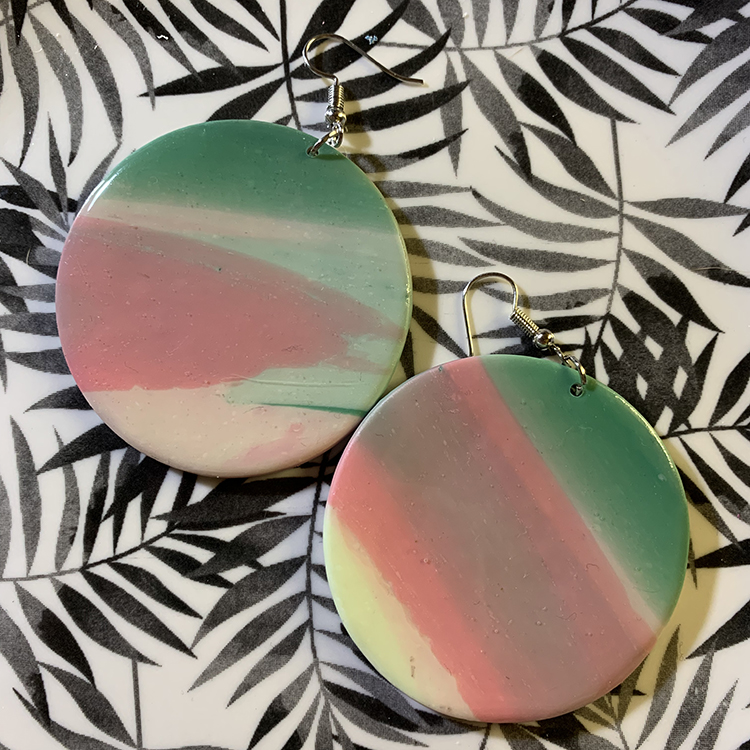

It's Janettic
Welkom op mijn website
Hier vind je binnenkort al mijn handgemaakte en unieke polymeerklei oorbellen. Ik ben druk bezig met het bouwen van mijn website om jou als bezoeker een optimale winkelervaring te bieden. Blijf op de hoogte van de laatste updates, nieuwe collecties en exclusieve kortingsacties door mij te volgen op Instagram. Daar deel ik regelmatig foto's van mijn nieuwste creaties en geef ik je af en toe een kijkje achter de schermen. Volg It's Janettic op Instagram en mis niets van mijn unieke polymeerklei oorbellen. Ik kan niet wachten om mijn website te lanceren en je te voorzien van de meest stijlvolle en originele accessoires die je outfit helemaal afmaken! Tot snel!
